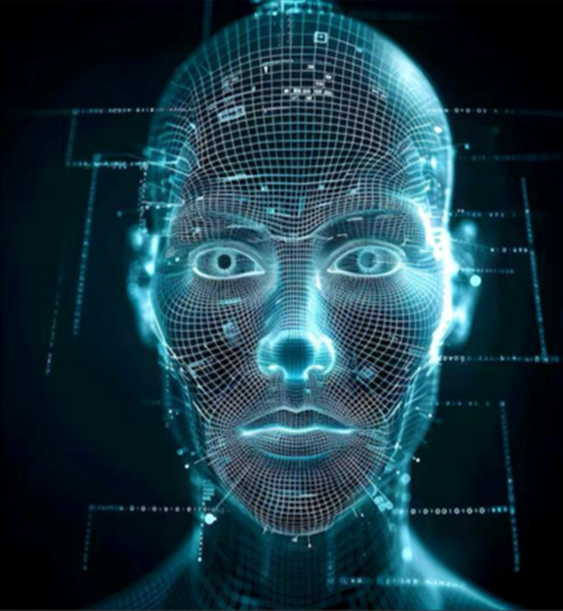

← Back to all projects
Face Recognition – One-shot Face Verification
Siamese neural network built with TensorFlow for one-shot face verification using triplet-based training.

Overview
This project implements a Siamese neural network that verifies whether two face images belong to
the same person. The model is trained using contrastive / triplet-style supervision with
anchor, positive, and negative examples to learn a robust embedding space for faces.
What the Model Does
- Encodes faces into fixed-size embeddings using a convolutional neural network.
- Computes distance between two embeddings to measure similarity.
- Outputs a verification decision: same person or different person.
Key Features
- Uses TensorFlow and Keras to build the Siamese architecture.
- Custom distance layer to compute L1 distance between embeddings.
- Training on structured triplets (anchor, positive, negative) for better similarity learning.
- Can be used in a real-time verification loop with a webcam and OpenCV.
Tech Stack
- Python, TensorFlow, Keras
- OpenCV for image capture and preprocessing
- Numpy, Pandas for data handling